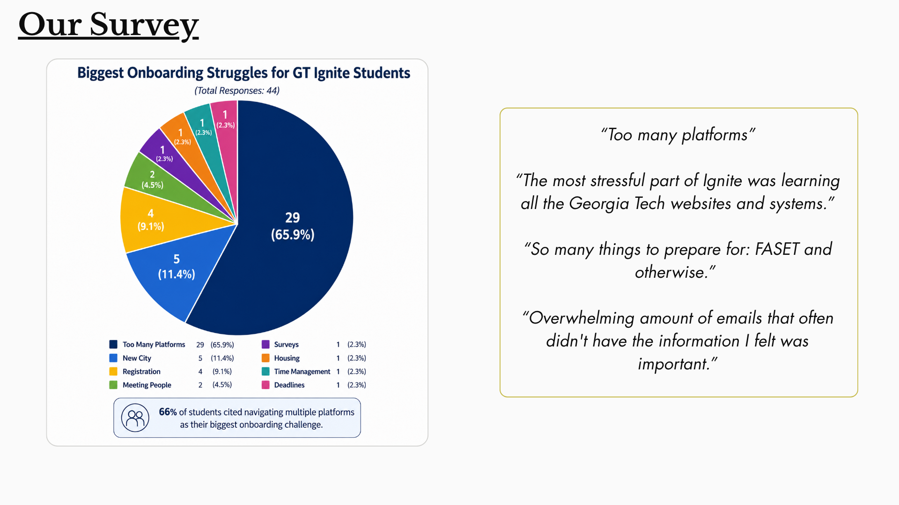
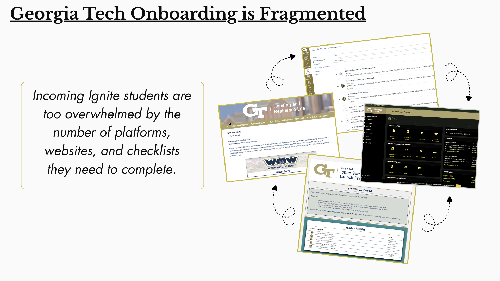
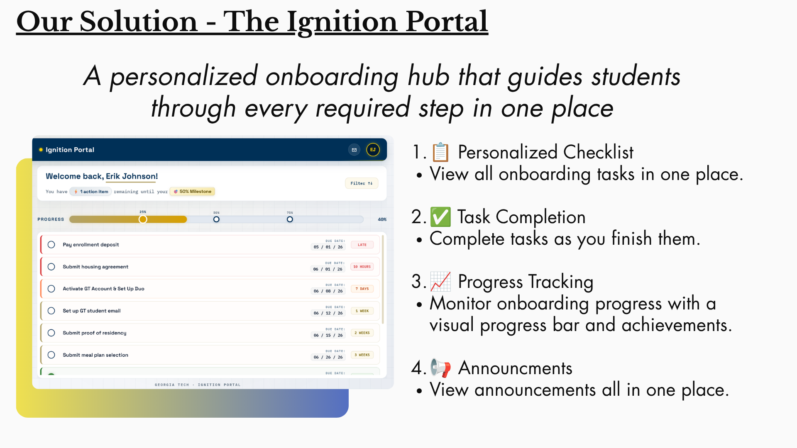

A student onboarding portal built at the Georgia Tech IGNITE Hackathon. It pulls the tasks, resources, and deadlines new students are handed across scattered systems into one place they can actually follow. We started from a survey, found a clear problem, and designed the portal as the answer to it.
01 · Research
We started by asking students
Rather than guess at what onboarding needed, I ran a survey of incoming IGNITE students to learn what actually made the start of college hard. With 44 responses, one answer dominated: the sheer number of separate platforms, sites, and checklists students had to juggle.
The most stressful part of Ignite was learning all the Georgia Tech websites and systems.
Overwhelming amount of emails that often didn't have the information I felt was important.

02 · Problem
Georgia Tech onboarding is fragmented
The survey confirmed the real problem: incoming students have to bounce between Canvas, Housing, OSCAR, the IGNITE portal, and a stream of emails, each with its own checklist and login. There's no single view of what's done and what's left, so the first weeks feel overwhelming before classes even begin.

03 · Solution
The Ignition Portal: one guided hub
Our answer was a personalized onboarding hub that walks a student through every required step in one place. I helped shape the user flow and designed the interface around four things students told us they needed.
Personalized checklist
Every onboarding task in one view, instead of scattered across platforms.
Task completion
Check tasks off as they're finished, with due dates surfaced up front.
Progress tracking
A visual progress bar and milestones so students can see how far along they are.
Announcements
Important updates collected in one spot instead of buried in email.

Demo
Walkthrough
Outcome. In a hackathon weekend, our three-person team took Ignition from a survey finding to a working prototype. I owned the research and helped drive the UI and user flows, and we used Claude to move quickly from ideas to a prototype under time pressure. It's the clearest example of how I like to work: find the real problem first, then design directly against it.